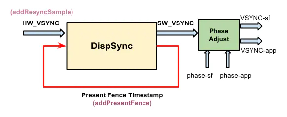
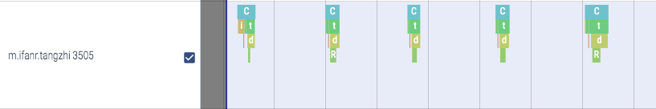

Android 图形栈（一）vsync
android 的垂直同步模型（vsync）是隐藏在 view 系统后面的很重要的一块，它控制着 view 渲染的节奏；而且 vsync 还是比较复杂的，我们从下到上，先从最熟悉的 View.invalidate 讲起，看看简单的一个 invalidate 后面隐藏着多么复杂的工作
从 View.invalidate() 说起

看上图，View.invalidate() 主要做了两件事：
- 将
ViewRootImpl.doTraversal()加入到Choreographer的任务列表里，等待下一次 vsync 信号到来时执行；doTraversal()主要执行 view tree 的三个重要方法：measure、layout 和 draw；Choreographer则是在一次 vsync 信号到来时，依次执行INPUT，ANIMATION和TRAVERSAL这三个类别的任务；也就是说 view tree 的渲染和 input 的处理都是从 vsync 到来时开始的，而且此时会开启同步栅栏，屏蔽非 ui 任务（用户任务），集中力量在下一次的 vsync 到来前完成一帧的渲染 - 唤醒
EventThread去看看有没 vsync 信号的到来；EventThread看名字就知道是一个线程，看它的 loop 流程，是将mPendingEvents分发给 consumer，那么我们可以猜想下，event 也许包含了 vsync，而 consumer 很有可能最终走到Choreographer.doFrame里触发 view tree 的绘制
按照从下到上追踪法，下一步就是看看是谁在什么时候把 event 放到 mPendingEvents 里，但这里我选择掉转方向盘，先从 surfaceflinger 讲起
继续之前，我们得先了解几个跟硬件有关的概念
HAL，Hardware Abstract Layer，硬件抽象层
看名字就知道这是跟硬件、设备相关的东西，应该是最贴近硬件的那一层软件，我没有做过相关的开发，但是结合 google 和这两篇文章：Android图形系统系统篇之HWC，Android HIDL HAL 接口定义语言详解，我大概了解了它是干什么的，我说说我的理解：
- 它用接口的方式定义协议，而协议则定义了组件间的沟通规范；Android app 开发其实也就这个概念，就是各个业务、基础能力的 interface；我做过 java web 开发，所以对这个概念比较熟悉；整个 java web 是由很多协议构成的：Servlet、JSP、JDBC 等，sun 给出包含这些协议 interface 的 jar 包出来（它自己也可能会给出一个默认实现比如 glassfish），各个厂商给出自己对协议的实现如：Tomcat、Jboss、Resin 等；而 web app 开发者只需根据协议 jar 包开发业务，部署时根据条件可以放在各种厂商的容器上
- HAL 也是这个道理，android HWC HAL 定义了各种 interface（在
hardware/interfaces/graphics/composer/2.1/目录下），各个厂商需要实现这些接口并给出 so 文件；打包 android image 的时候，根据硬件设备挑选合适的 HAL 实现，把 so 文件放到镜像里；而 android framework 开发者只需根据 HAL 接口进行业务开发即可，无需关心实现细节
HIDL，HAL Interface Definition Language，HAL 接口定义语言
看名字好像跟 AIDL 有点渊源啊，对的，它是 HAL 的代码生成器；具体怎么用我们了解下即可：Android图形系统系统篇之HWC，Android HIDL HAL 接口定义语言详解，Android HIDL 之 hal 进程启动及服务注册过程
总结下关键点：
- 各个 HAL 是独立进程的（看看
hardware/interfaces/graphics/composer/2.1/default/是怎么启动 HWC 进程并加载厂商 so 库的），surfaceflinger 进程通过 binder 与 HWC 进程通讯（也就是 C/S 架构，HWC 是 server，surfaceflinger 是 client） - HWC 将服务注册到
hwservicemanager，surfaceflinger 从hwservicemanager获取 composer 服务 - 所以用从下到上的方法找调用栈的时候会发现，onVsync 方法找不到调用的地方，那是因为发送 vsync 信号的代码是厂商代码（framework 提供 callback interface），不在 aosp 里面
HWC，硬件图层合成器
Android图形系统系统篇之HWC 这里也介绍了，它是一个合成多个图层的组件（原来状态栏、导航栏、壁纸、app 等不是一起渲染，而是独自渲染最后合成为屏幕内容的），这里只关心它会发出 vsync 信号

我们先理解这张图，屏幕（硬件）发出 vsync 信号（就是上图的 HW_VSYNC），经过软件的一系列的调整生成 SW_VSYNC，然后输出到两路：
SF_VSYNC，输出到 surfaceflingerAPP_VSYNC，输出到 app
HW_VSYNC - 硬件垂直同步信号

surfaceflinger 是一个很重要的服务进程，它跟图像和显示有关，源码在 /frameworks/native/services/surfaceflinger；目录下有个编译配置文件 Android.bp ，看下它的内容，它输出了可执行文件 surfaceflinger、共享库 libsurfaceflinger.so 和 libSurfaceFlingerProp.so；然后有个 surfaceflinger.rc，它是一个启动配置文件，意味着 surfaceflinger 会在系统启动后被 init 进程启动为服务进程，看下里面的内容，可执行文件是 /system/bin/surfaceflinger，main 函数入口在 main_surfaceflinger.cpp
从上图可以看到 surfaceflinger 进程启动后，会查找 HWC server 并注册 callback，当设备发出 hw_vsync 时，SurfaceFlinger.onVsyncReceived 被执行，看上面那张图，hw_vsync 不是直接被使用，而是被调整转换为 sw_vsync，也就是 DispSync.addResyncSample
SW_VSYNC - 软件垂直同步信号
DispSyncThread 和 DispSync 收集 HW_VSYNC，计算并输出 SW_VSYNC；主循环是 DispSyncThread.threadLoop()，但在分析 main loop 之前，我们需要先了解 DispSync 几个重要的属性（参考「Android SurfaceFlinger SW Vsync模型」）
mResyncSamples 数组 - 通过上面的分析我们知道 addResyncSample 把 HW_VSYNC 加入 DispSync，但 mResyncSamples 只会保留最新的 32 个以供后续计算；它是个首尾相连、环状的循环列表，容量为 32
mPeriod - 两个 HW_VSYNC 之间的时间间隔，相当于刷新率，我们看下它是怎么计算的
void DispSync::updateModelLocked() {
ALOGV("[%s] updateModelLocked %zu", mName, mNumResyncSamples);
// 只有收集到足够多（≥ 6）的 HW_VSYNC 才去计算刷新率（以及其他参数）
if (mNumResyncSamples >= MIN_RESYNC_SAMPLES_FOR_UPDATE) {
ALOGV("[%s] Computing...", mName);
nsecs_t durationSum = 0;
nsecs_t minDuration = INT64_MAX;
nsecs_t maxDuration = 0;
// We skip the first 2 samples because the first vsync duration on some
// devices may be much more inaccurate than on other devices, e.g. due
// to delays in ramping up from a power collapse. By doing so this
// actually increases the accuracy of the DispSync model even though
// we're effectively relying on fewer sample points.
// 把收集到的 HW_VSYNC 时间间隔去掉前两个，去掉最大值和最小值，剩下的求平均值
// 这就算出了硬件的刷新率，它是计算出来的一个平均值，因为 HW_VSYNC 速率极可能是会变动的
static constexpr size_t numSamplesSkipped = 2;
for (size_t i = numSamplesSkipped; i < mNumResyncSamples; i++) {
size_t idx = (mFirstResyncSample + i) % MAX_RESYNC_SAMPLES;
size_t prev = (idx + MAX_RESYNC_SAMPLES - 1) % MAX_RESYNC_SAMPLES;
nsecs_t duration = mResyncSamples[idx] - mResyncSamples[prev];
durationSum += duration;
minDuration = min(minDuration, duration);
maxDuration = max(maxDuration, duration);
}
// Exclude the min and max from the average
durationSum -= minDuration + maxDuration;
mPeriod = durationSum / (mNumResyncSamples - numSamplesSkipped - 2);
// ...
}
}mPhase - mPeriod 的偏差值；我们知道 mPeriod 是一个计算出来的平均值，而且还去除了一些噪音（极大值、极小值等），那么它与真实的 HW_VSYNC 之间必定会有偏差，mPhase 就是这个平均偏差（要从数学理论上去理解）；这里不深入细节了
void DispSync::updateModelLocked() {
ALOGV("[%s] updateModelLocked %zu", mName, mNumResyncSamples);
if (mNumResyncSamples >= MIN_RESYNC_SAMPLES_FOR_UPDATE) {
// ...
double sampleAvgX = 0;
double sampleAvgY = 0;
double scale = 2.0 * M_PI / double(mPeriod);
for (size_t i = numSamplesSkipped; i < mNumResyncSamples; i++) {
size_t idx = (mFirstResyncSample + i) % MAX_RESYNC_SAMPLES;
nsecs_t sample = mResyncSamples[idx] - mReferenceTime;
double samplePhase = double(sample % mPeriod) * scale;
sampleAvgX += cos(samplePhase);
sampleAvgY += sin(samplePhase);
}
sampleAvgX /= double(mNumResyncSamples - numSamplesSkipped);
sampleAvgY /= double(mNumResyncSamples - numSamplesSkipped);
mPhase = nsecs_t(atan2(sampleAvgY, sampleAvgX) / scale);
ALOGV("[%s] mPhase = %" PRId64, mName, ns2us(mPhase));
if (mPhase < -(mPeriod / 2)) {
mPhase += mPeriod;
ALOGV("[%s] Adjusting mPhase -> %" PRId64, mName, ns2us(mPhase));
}
// Artificially inflate the period if requested.
mPeriod += mPeriod * mRefreshSkipCount;
// ...
}
}mReferenceTime，这个最新那个 HW_VSYNC 的时间，每次计算下一个 SW_VSYNC 时都是以该时间作为基准，这样可以减少误差。如果每一个 SW_VSYNC 都以上一个 SW_VSYNC 作为基准，那误差就会不停的累加；而如果以第一个 HW_VSYNC 作基准，那每次 SW_VSYNC 误差是不会累加的
现在我们看下 main loop
virtual bool threadLoop() {
status_t err;
nsecs_t now = systemTime(SYSTEM_TIME_MONOTONIC);
while (true) {
std::vector<CallbackInvocation> callbackInvocations;
nsecs_t targetTime = 0;
{ // Scope for lock
Mutex::Autolock lock(mMutex);
if (mTraceDetailedInfo) {
ATRACE_INT64("DispSync:Frame", mFrameNumber);
}
ALOGV("[%s] Frame %" PRId64, mName, mFrameNumber);
++mFrameNumber;
if (mStop) {
return false;
}
// 收集到足够多的 HW_VSYNC 算出刷新率后，才计算 SW_VSYNC，否则 wait
if (mPeriod == 0) {
err = mCond.wait(mMutex);
if (err != NO_ERROR) {
ALOGE("error waiting for new events: %s (%d)", strerror(-err), err);
return false;
}
continue;
}
// computeNextEventTimeLocked 这个方法很重要，我们知道随着 HW_VSYNC 样本的不断更新，
// mPeriod、mPhase 和 mReferenceTime 也跟着轻微变动，上一次的 SW_VSYNC 是根据上一次的参数算出来的
// 下一次的 SW_VSYNC 则在上次时间戳的基础上重新计算
targetTime = computeNextEventTimeLocked(now);
// 没到时间则 wait
bool isWakeup = false;
if (now < targetTime) {
if (mTraceDetailedInfo) ATRACE_NAME("DispSync waiting");
if (targetTime == INT64_MAX) {
ALOGV("[%s] Waiting forever", mName);
err = mCond.wait(mMutex);
} else {
ALOGV("[%s] Waiting until %" PRId64, mName, ns2us(targetTime));
err = mCond.waitRelative(mMutex, targetTime - now);
}
if (err == TIMED_OUT) {
isWakeup = true;
} else if (err != NO_ERROR) {
ALOGE("error waiting for next event: %s (%d)", strerror(-err), err);
return false;
}
}
now = systemTime(SYSTEM_TIME_MONOTONIC);
// Don't correct by more than 1.5 ms
static const nsecs_t kMaxWakeupLatency = us2ns(1500);
if (isWakeup) {
mWakeupLatency = ((mWakeupLatency * 63) + (now - targetTime)) / 64;
mWakeupLatency = min(mWakeupLatency, kMaxWakeupLatency);
if (mTraceDetailedInfo) {
ATRACE_INT64("DispSync:WakeupLat", now - targetTime);
ATRACE_INT64("DispSync:AvgWakeupLat", mWakeupLatency);
}
}
// 发送时，再次计算发送时间，只有此时到达发送时间的才发送（时间算得很精确）
callbackInvocations = gatherCallbackInvocationsLocked(now);
}
if (callbackInvocations.size() > 0) {
fireCallbackInvocations(callbackInvocations);
}
}
return false;
}总的来说，SW_VSYNC 它去除了噪音，而且用过去 32 个 HW_VSYNC 样本的平均值作刷新率，对比 HW_VSYNC 显得平滑了很多
那谁接收 SW_VSYNC？
void SurfaceFlinger::initScheduler(DisplayId primaryDisplayId) {
// ... 一个是 app，叫做 APP_VSYNC 吧
mAppConnectionHandle =
mScheduler->createConnection("app", mVsyncModulator.getOffsets().app,
mPhaseOffsets->getOffsetThresholdForNextVsync(),
impl::EventThread::InterceptVSyncsCallback());
// ... 一个是 sf，叫做 SF_VSYNC 吧
mSfConnectionHandle =
mScheduler->createConnection("sf", mVsyncModulator.getOffsets().sf,
mPhaseOffsets->getOffsetThresholdForNextVsync(),
[this](nsecs_t timestamp) {
mInterceptor->saveVSyncEvent(timestamp);
});
// ...
}APP_VSYNC - 发送给 app 的垂直同步信号
还记得文章开头那张 View.invalidate() 时序图吗？最后面它唤醒了 EventThread，现在我们来看看 EventThread 的主循环都做了些什么
void EventThread::threadMain(std::unique_lock<std::mutex>& lock) {
DisplayEventConsumers consumers;
while (mState != State::Quit) {
std::optional<DisplayEventReceiver::Event> event;
// 在文章的开头，我们就猜测 mPendingEvents 里放的是同步信号
// 现在我们知道了里面包含 SW_VSYNC，那是谁放进去的呢？
if (!mPendingEvents.empty()) {
event = mPendingEvents.front();
mPendingEvents.pop_front();
...
}
bool vsyncRequested = false;
// Find connections that should consume this event.
auto it = mDisplayEventConnections.begin();
while (it != mDisplayEventConnections.end()) {
if (const auto connection = it->promote()) {
vsyncRequested |= connection->vsyncRequest != VSyncRequest::None;
if (event && shouldConsumeEvent(*event, connection)) {
consumers.push_back(connection);
}
++it;
} else {
it = mDisplayEventConnections.erase(it);
}
}
// 分发给消费者，怎么回调给 Choreographer？
if (!consumers.empty()) {
dispatchEvent(*event, consumers);
consumers.clear();
}
// ...
}
}DispSyncThread 把 SW_VSYNC 压入 EventThread.mPendingEvents

分发 SW_VSYNC 的流程
ViewRootImpl里拿到的是接收 APP_VSYNC 的ChoreographerChoreographer在构造函数里通过SurfaceFlinger与EventThread建立连接；这个连接其实是个Parcelable，一块可以 io 的内存，EventThread往里面写入 SW_VSYNC，DisplayEventReceiver则通过Looper.addFd监听（这是 app main looper）- 当收到 SW_VSYNC 时
FrameDisplayEventReceiver把Choreographer.doFrame放入 message queue，这样 input、animate 和 view 绘制即将执行

SF_VSYNC
上面我们在分析是谁接收 SW_VSYNC 时，除了 APP_VSYNC 外，还有一路 SF_VSYNC
void SurfaceFlinger::initScheduler(DisplayId primaryDisplayId) {
// ... 一个是 sf，叫做 SF_VSYNC 吧
mSfConnectionHandle =
mScheduler->createConnection("sf", mVsyncModulator.getOffsets().sf,
mPhaseOffsets->getOffsetThresholdForNextVsync(),
[this](nsecs_t timestamp) {
mInterceptor->saveVSyncEvent(timestamp);
});
// 看看 mEventQueue->setEventConnection 做了什么
mEventQueue->setEventConnection(mScheduler->getEventConnection(mSfConnectionHandle));
// ...
}
// 上面有分析过，vsync event 是写入到一块内存里，通过 fd 可以监听到，而回调是 MessageQueue::cb_eventReceiver
void MessageQueue::setEventConnection(const sp<EventThreadConnection>& connection) {
if (mEventTube.getFd() >= 0) {
mLooper->removeFd(mEventTube.getFd());
}
mEvents = connection;
mEvents->stealReceiveChannel(&mEventTube);
mLooper->addFd(mEventTube.getFd(), 0, Looper::EVENT_INPUT, MessageQueue::cb_eventReceiver, this);
}
// 继续看 eventReceiver 方法
int MessageQueue::cb_eventReceiver(int fd, int events, void* data) {
MessageQueue* queue = reinterpret_cast<MessageQueue*>(data);
return queue->eventReceiver(fd, events);
}
// 把 events 解包成 DisplayEventReceiver::Event，当有 vsync 时执行 dispatchInvalidate
int MessageQueue::eventReceiver(int /*fd*/, int /*events*/) {
ssize_t n;
DisplayEventReceiver::Event buffer[8];
while ((n = DisplayEventReceiver::getEvents(&mEventTube, buffer, 8)) > 0) {
for (int i = 0; i < n; i++) {
if (buffer[i].header.type == DisplayEventReceiver::DISPLAY_EVENT_VSYNC) {
mHandler->dispatchInvalidate();
break;
}
}
}
return 1;
}
// 看来得找出 Handler.handleMessage，看看里面怎么处理 MessageQueue::INVALIDATE
void MessageQueue::Handler::dispatchInvalidate() {
if ((android_atomic_or(eventMaskInvalidate, &mEventMask) & eventMaskInvalidate) == 0) {
mQueue.mLooper->sendMessage(this, Message(MessageQueue::INVALIDATE));
}
}
// 最终发现是走到了 SurfaceFlinger::onMessageReceived
void MessageQueue::Handler::handleMessage(const Message& message) {
switch (message.what) {
case INVALIDATE:
android_atomic_and(~eventMaskInvalidate, &mEventMask);
mQueue.mFlinger->onMessageReceived(message.what);
break;
case REFRESH:
android_atomic_and(~eventMaskRefresh, &mEventMask);
mQueue.mFlinger->onMessageReceived(message.what);
break;
}
}
// 代码比较长，这就不贴出来了，总结下：
// SF_VSYNC 最终会调用 onMessageReceived(MessageQueue::INVALIDATE)，然后又会调用 onMessageReceived(MessageQueue::REFRESH)
void SurfaceFlinger::onMessageReceived(int32_t what) {}结合 systrace
为什么会有 APP_VSYNC 和 SF_VSYNC 呢？这就不得不从屏幕上的内容讲起
实际上，我们在屏幕上看到的内容是由多个 layer 组合而成的：前台 app（多窗口模式下会有多个 app 显示）、桌面、壁纸、systemui 等，每个 app ui thread 负责绘制自己的内容，然后由 SurfaceFlinger 将它们合成在一起并显示在屏幕上
也就是说 APP_VSYNC 触发各个 app 的绘制，而最终屏幕内容的改变是由 SF_VSYNC 触发的；是不是这样呢？我们来看下 systrace




可以看到 ui thread doFrame 的确跟随着 APP_VSYNC（render thread 是执行 opengl 的线程，在 ui thread 计算完后获取结果并输出至 gpu），surfaceflinger onMessageReceived 也是跟随着 SF_VSYNC 的；但有没发现，它们俩似乎是同时执行的？surfaceflinger 不是应该等待 app 渲染完它那一层再合成吗？
我们重新回顾 initScheduler，有没发现这两路 vsync 都有一个 offset 参数？没错，就是这个参数控制着收到 vsync 后到执行工作的这一段延迟时间；实际上图 surfaceflinger 的延迟差不多是一个 vsync 的周期时间那么大，每个 surfaceflinger 合成的内容却是上一个周期里 app 渲染的内容；而且在合成工作完成后，当前周期的 app 渲染工作（render thread）才开始，避免了 layer 的内容被覆盖；这几个线程就这样有节奏地工作在一起。